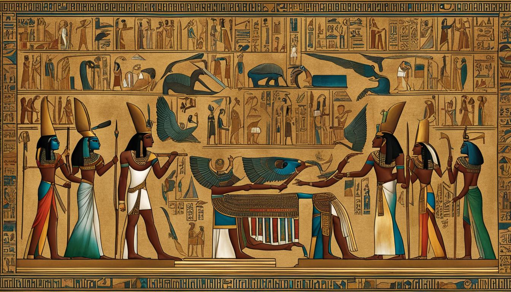
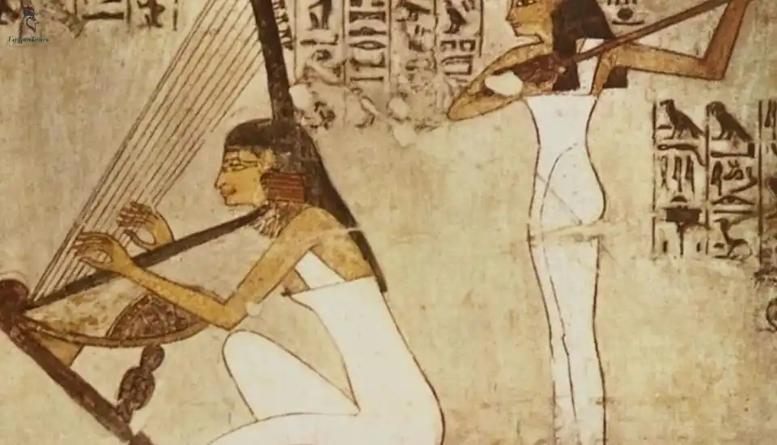

Welcome to the Egyptian Culture Page
Egypt has one of the oldest and richest cultures in the world, stretching back more
than five thousand years. From the mighty pyramids and the mysterious Sphinx to colorful
festivals and warm hospitality, Egyptian traditions blend ancient history with modern life.
The country is often called the “Gift of the Nile,” as its life-giving river has supported farming,
trade, and civilization since ancient times. Visitors come from around the globe to explore its incredible
heritage, admire the timeless temples and tombs of the pharaohs, and experience a culture filled with art,
music, storytelling, and deep respect for family and tradition.
Famous Pharaohs
Some of the most well-known pharaohs include Tutankhamun, Ramses II,
and Cleopatra. They ruled over powerful kingdoms and left behind
great monuments and legacies such as temples, tombs, and the pyramids.
Their leadership helped shape ancient Egypt’s golden age.

Queen Cleopatra
Religion
Today, the majority of Egyptians practice Islam, while a smaller portion of the population follows Christianity, primarily the Coptic Orthodox Church.
Religion has always been central to Egyptian life. In ancient times, Egyptians worshiped a rich pantheon of gods and goddesses, including Ra, the sun god; Isis, the goddess of magic and motherhood; and Anubis, the guardian of the afterlife.
Temples, pyramids, and elaborate tombs were constructed to honor these deities, reflecting the deep spiritual beliefs that shaped society.
Religious practices influenced daily routines, governance, art, and architecture, leaving a legacy that still inspires and fascinates people around the world today.

Customs
Egyptians place a strong emphasis on family, hospitality, and respect for elders, which are considered the cornerstone of daily life.
Traditions are woven into every aspect of society, from sharing meals with loved ones to celebrating cultural and religious festivals.
Food, music, and dance are integral to these celebrations, with events like Ramadan and Sham El-Nessim bringing communities together in joyous observance.
Greetings are warm and polite, often accompanied by smiles, handshakes, or embraces, reflecting a culture that values connection and generosity.
In Egypt, sharing food and conversation is more than nourishment—it is a meaningful expression of friendship, respect, and social harmony.

Art and Architecture
Egypt is renowned for its extraordinary art and architecture, which spans thousands of years and continues to captivate the world.
From the intricate hieroglyphics of ancient tombs to the majestic temples of Luxor and Karnak, every structure reflects the remarkable creativity, technical skill, and spiritual beliefs of the Egyptians.
The Great Pyramids of Giza stand as timeless symbols of engineering genius and cultural achievement, while modern Islamic design showcases the country’s evolving artistic heritage.
From monumental stone carvings to detailed paintings and delicate jewelry, Egyptian art and architecture reveal a civilization deeply committed to beauty, symbolism, and storytelling.